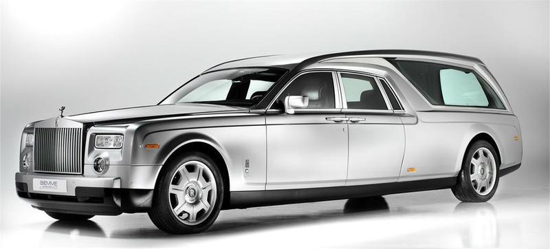
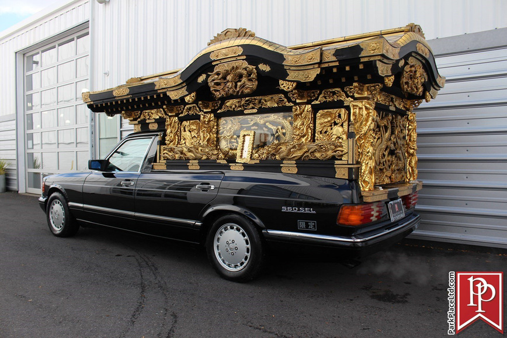
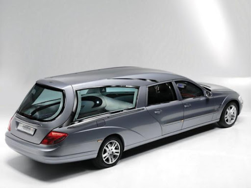
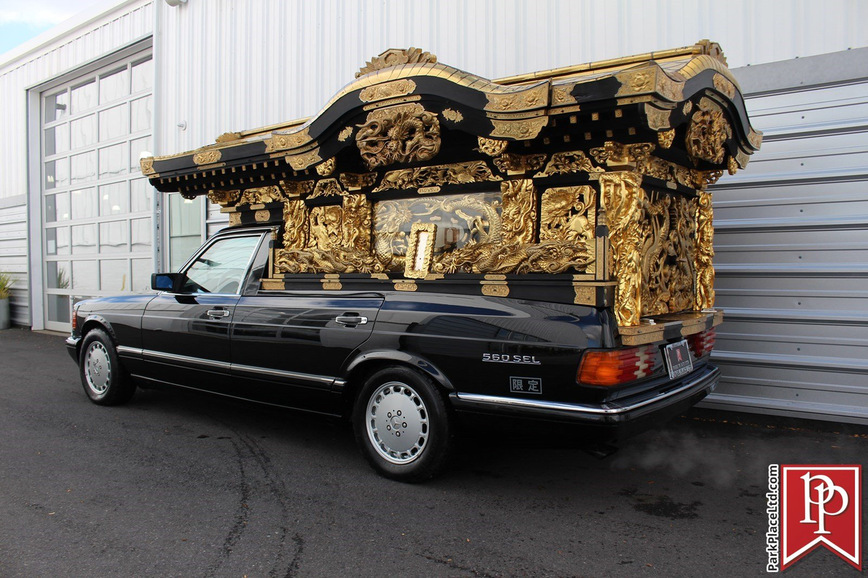
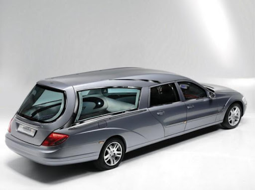

Ми поряд у важливі моменти
Ми — страхова компанія "Остання Дорога", яка допомагає сім’ям проходити найскладніші життєві ситуації з гідністю та підтримкою. Ми беремо на себе організаційні, фінансові та юридичні питання, щоб ви могли зосередитись на головному — памʼяті та родині.
Індивідуальні страхові плани
Ми пропонуємо різні страхові програми, що враховують бюджет, традиції та особисті побажання. Кожен клієнт отримує рішення «під ключ», без прихованих платежів і незрозумілих умов.
Надійні партнери
Ми співпрацюємо з ритуальними службами, транспортними компаніями, юристами та психологами. Це дозволяє нам забезпечити повний супровід — від перевезення до документів.

Підтримка 24/7
Ми на зв’язку цілодобово. Наші консультанти нададуть допомогу у будь-який момент, пояснять усі кроки та супроводжуватимуть вас до завершення процесу.
Доступність для кожного
Ми розробили гнучкі пакети, щоб кожен міг обрати оптимальний варіант без фінансового тиску. Прозорість — наш головний принцип.
Наша робота — це про повагу, відповідальність і людяність. Ми завжди поруч тоді, коли це потрібно найбільше.
Страхування як вияв любові
Багато хто боїться обговорювати тему смерті. Але життя доводить — завчасна підготовка не наближає кінець, а навпаки, дарує спокій та впевненість. Наші клієнти — це ті, хто піклується про своїх близьких настільки, що хоче зняти з них тягар витрат, складних рішень і стресу в найскладніші дні.
Наша страхова модель — це не просто документ. Це — зобов’язання, яке ми виконуємо з гідністю, повагою і повною віддачею. Ваша сім’я не залишиться наодинці — ми візьмемо на себе всі деталі: від квітів до документів, від транспорту до підтримки у суді.
Турбота без обмежень
Ми віримо, що прощання має бути доступним кожному. Саме тому ми розробили гнучку систему пакетів, які враховують:
- Рівень доходу
- Місце проживання (місто чи село)
- Релігійні та культурні особливості
- Побажання щодо церемонії
- Можливість розстрочки
У нас немає прихованих платежів. Кожна копійка — прозора. Ми не працюємо з болем як з бізнесом — ми працюємо з болем як із людським досвідом, який потребує максимальної делікатності.
Ми співпрацюємо тільки з найкращими
Наші партнери — це перевірені ритуальні агентства, транспортні служби, морги, юристи, нотаріуси, психологи та духовні наставники. Ми об'єднуємо найкращих фахівців, щоб кожна деталь була на найвищому рівні, а ваша довіра — виправдана.
Цілодобова підтримка, яку відчуваєш серцем
Смерть не вибирає часу. Вона може прийти вдень, уночі, у свята чи вихідні. Саме тому ми працюємо 24/7. Ви можете зателефонувати нам серед ночі — і ми відповімо. Ми не просто слухаємо — ми розуміємо.
Наші оператори проходять спеціальне навчання з кризової комунікації. Вони спілкуються м’яко, не тиснуть, не нав’язують — вони поруч. І так буде до останнього кроку.
Після прощання — ми не зникаємо
Ми залишаємося з вами і після завершення прощання. Бо біль не зникає наступного дня. Тому ми надаємо психологічну підтримку, допомагаємо з оформленням документів, з вирішенням юридичних питань, і просто залишаємось на зв’язку — якщо потрібно поговорити.
Чому обирають нас
- Гідність і повага до кожного випадку
- Конфіденційність та тактовність у всіх діях
- Прозорі ціни та зрозумілі умови
- Комплексний підхід — від страховки до реалізації
- Жодної формальності — лише справжнє людське ставлення
- Технологічність — електронні поліси, швидкий зв'язок, інтеграція з державними базами
"Остання дорога" — це не про смерть. Це про пам’ять.
Наша місія — зберегти пам’ять у гідності. Допомогти вам пройти цей шлях не в розпачі, а в спокої. Дати змогу попрощатися з тими, кого любимо, так, як вони того варті.
Ми не замінюємо біль, але ми допомагаємо не тонути в ньому. Ми не повернемо час, але ми подбаємо, щоб останні миті були світлими.
Коли настає час прощатися — ми тут.
Остання Дорога. Страхування, яке не зраджує.
 


